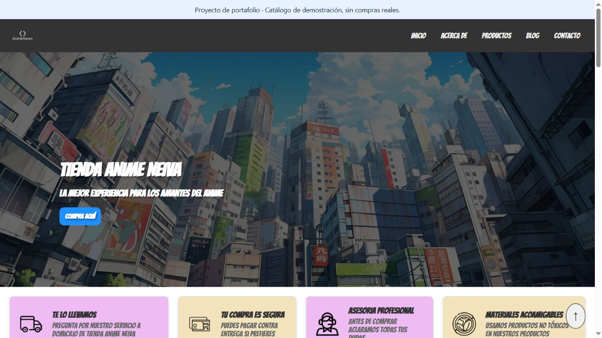

Frontend · Catálogo de demostración
AnimeHaven
Una tienda temática de anime con catálogo y ficha de producto. La retomé para corregir la carga de datos, el menú móvil y los enlaces de navegación.
El carrito confirma la selección; no procesa pedidos ni pagos.